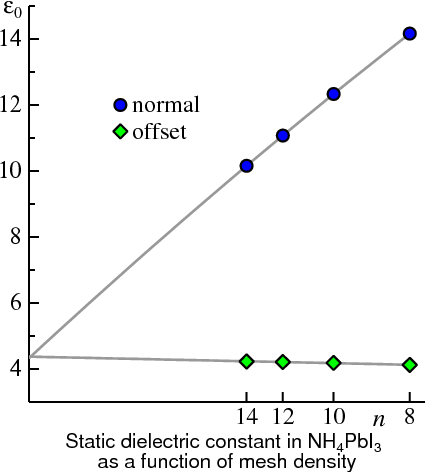
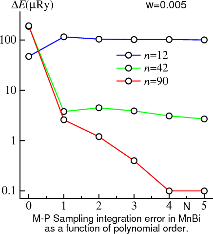
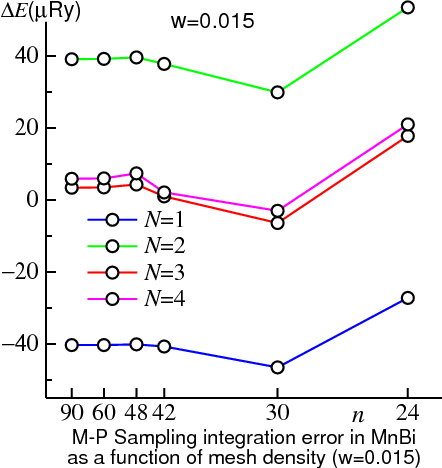
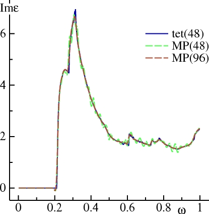

The definition of the G vectors is standard: define G=(P−1)† where P is 3×3 matrix constructed from the three primitive lattice vectors P1, P2, P3. G1, G2, G3 are the three vectors composing the 3×3 matrix G.
Dividing G1, G2, G3 respectively into n1, n2, n3 sections creates a set of (n1×n2×n3) microcells all of the same shape and size. The BZ integration is performed numerically by summing over each of the microcells. You specify (n1, n2, n3) through BZ_NKABC. Thus the total number of k points in the Z is n1n2n3. If symmetry operations apply, this number may be reduced.
A uniform mesh is the optimal general purpose quadrature for analytic, periodic functions, in the following sense.
Consider the 1D case; the 3D case is exactly analogous.
A numerical quadrature from a set of n uniformly spaced points integrates exactly any function representable by a Fourier series of n Fourier components or fewer, i.e.
f(x) = ∑i=0:n−1 Ci cos(2πix/L)
+Si sin(2πix/L) for a function periodic in L.
Thus when integrating analytic functions, such as the single particle sum for the energy bands of an insulator,
the uniform mesh is a good general purpose quadrature. In order to return the discussion to the three dimensional BZ, make the substitution i→G where
G is a reciprocal lattice vector (some integer multiple of G1, G2, G3).
The band energy can be represented in a Fourier series as
\begin{equation}
E({\bf{k}}){\rm{ }} = {\rm{ }}\sum\nolimits_{\bf{T}} {{C_{\bf{T}}}{e^{2\pi i{\bf{k}} \cdot {\bf{T}}}}}
\label{eq:ek}
\end{equation}
k is the analog of x; it is periodic in the G vectors.
Provided that the Fourier coefficients
CT decay exponentially with |G|, integration with a uniform quadrature converges exponentially with the number of k points.
CT does more or less decay this way, typically. In one-band tight-binding
theory CT would correspond to a hopping matrix element a separated by distance 1/|G|.
 For each of the G1, G2, G3 directions independently, there are two ways to choose a uniform mesh: it may contain a point that coincides with the origin, or it is offset so that the points straddle the origin. You specify this choice through BZ_BZJOB. Under what circumstances does this matter? For band calculations the main reason is that sometimes a staggered mesh will yield fewer irreducible k points, even while the total number of points is unchanged. In the somewhat different context of linear response calculations, the response function as q→0 is difficult to treat. The GW code has an option to supply a staggered k for calculating ε(r,r',ω). Sometimes an offset mesh can significantly improve matters. One striking example of this is the recently discovered solar cell material, NH4PbI3. The figure on the left shows the static dielectric constant (more precisely ε∞), calculated in the Quasiparticle Self-Consistent GW approximation as a function of n (n = n1 = n2 = n3). The abscissa is scaled so that points are uniformly spaced in 1/n with the origin corresponding to n→∞. Calculations with both the normal mesh (which includes the Γ point) and an offset mesh are shown. Extrapolating either curve to n→∞ results in an estimate for ε∞ of 4.3. But it is remarkable how far from converged the normal mesh is even for n=14 divisions of k. 14 divisions is already a rather fine mesh: calculations with a still finer mesh, especially one fine enough to obtain a reasonably converged result without extrapolating, would be prohibitively expensive. On the other hand calculations with the offset mesh depend only weakly on 1/n.
*Note Meshes generated by BZ_NKABC and BZ_BZJOB are identical to meshes generated by the Monkhorst Pack scheme, with suitably chosen parameters. But the present specification is simpler and more transparent.
When the material is an insulator, sum over occupied states means sum over all the filled bands. Then Eband can be written simply as \begin{equation} {E_{{\rm{band}}}} = \frac{V}{{{{(2\pi )}^3}}} \sum\nolimits_{n}^{\rm{occ}} {\int_{{\rm{BZ}}} {{E_n}({\bf{k}}){d^3}{\bf{k}}} } \end{equation} Each band is an analytic, periodic function of k, so numerical integration on the uniform mesh enables the band sum to converge with the k mesh in proprtion to how quickly the CT of Eq.(\ref{eq:ek}) decay.
For a metal the situation is more complicated. There is an abrupt truncation of the occupied part of the band at the Fermi level EF. At 0K the behavior is non-analytic; at normal finite temperatures the non-analyticity is only a little softened.
fp/test/test.fp copt
There are caveats to keep in mind with respect to this method. Sometimes a pair of bands can cross near EF. The tetrahedron integrator, which must interpolate a single band between the four corners of a tetrahedron, expects the band to behave in an analytic way. If two bands cross inside the tetrahedron, the both the lower band and upper band are non-analytic (in reality both are analytic but the integrator isn't smart enough to detect that there is a band crossing and switch the levels). When this occurs usually the integrator yields a non-integral number of electrons. It will detect this and print out a warning message:
(warning): non-integral number of electrons --- possible band crossing at E_fWhen you get this message usually (not always!) it is because of a band crossing problem. As you proceed to self-consistency it may go away. If not, you need to modify your k mesh. The larger the system with a denser mesh of bands, the more serious this issue becomes.
Another drawback with the tetrahedron scheme is that all the eigenvalues must be known before the weight for any one can be determined. This is because integrals are done over tetrahedra, each of which involves four k points. Thus unless some trickery is used, two band passes are required: one pass to get all the eigenvalues to determine integration weights, and a second pass to accumulate quantities that depend on eigenfunctions, such as the charge density. The FP code has a "mixed" scheme available: the charge density is calculated by sampling while the band sum is calculated by the tetrahedron method. This avoids a double band pass, and is effective because, thanks to the variational principle, density can be evaluated to less precision than Eband.
The left figure illustrates these points. The BZ integration in the Harris-Foulkes energy is shown for MnBi --- the same system used to demonstrate tetrahedron integration. In this figure integrations are carried out with Methfessel-Paxton (MP) sampling described below using N=1 for various widths w. When w is 0.015 (rather large), the energy has converged to within 1μRy of the n→∞ limit for n≥42. But, it converges to a result differing from the exact one by 40μRy. As w→0, ΔE should vanish with n→∞. Indeed this is the case: if w=2 mRy the integral is converged to well within 1μRy. But the approach to convergence is much slower: only for n≥90 does the integral stabilize to within 1μRy. The w=5 and 10 mRy cases show behavior intermediate between w=2 and 15 mRy. The converged integration errors are 2.6μRy and 3.5μRy, respectively.
If the δ-function is broadened with a gaussian in the standard manner, good results are obtained only
when w is very small, and the situation would seem to be hopeless. What saves the day is
Methfessel and Paxton's generalization of the broadening function.
It starts from the representation of the exact δ-function as bilinear combinations of Hermite polynomials and a gaussian
\begin{equation}
\delta (x) = \mathop {\lim }\limits_{N \to \infty } {D_N}(x), \hspace{0.5cm} D_N(x) = \sum\nolimits_{m = 0}^N {{A_m} {H_{2m}}(x){e^{ - {x^2}}}}
\end{equation}
Standard gaussian broadening represents δ(x) by the m=0 term alone. But
by truncating the series at some low order N larger than 0, better representations
of the δ-function are possible (figure above, right) and the integration quality can be dramatically improved.
Eband can be well converged without requiring an excessively small w.
  Choosing any N>0 can dramatically improve the quality of sampling integration. The figure on the left shows how |ΔE| for MnBi depends on N, for a relatively coarse k mesh (n=12), a very fine one (n=90), and intermediate one (n=42). For the coarse mesh no advantage is found by varying N. This is because the k mesh integration error (i.e. the number of CT in Eq.(\ref{eq:ek}) integrated exactly by the mesh is finite, and essentially equal to n1n2n3) is larger than the error originating from approximations to the δ-function.
For the intermediate mesh (n=42) the situation is a bit different. If N=0, the approximation to the δ-function dominates ΔE: increasing N from 0→1 reduces it by a factor of almost 100! But increasing N above 1 has no additional effect: the error remains fixed in the 3-4μRy range. It has already become dominated by the fineness of the k-mesh, any adequate (N≥1) representation of the δ-function will serve equally well. Not insignificantly, ΔE from the tetrahedron method is in the same range (4μRy).
For the very fine mesh (n=90) much the same story appears, only now that the transition from ΔE being dominated by δ-function error to the discreteness of the k mesh doesn't occur until N=4. Because the mesh is so fine, ΔE is tiny, of order 0.1μRy.
MP makes it possible to perform quality integrations with sampling. The right figure shows the MnBi test case, now fixing w at 0.015 and varying N. (N=0 is not shown: ΔE is a couple orders of magnitude larger for this w.) In the n→∞ limit, increasing the polynomial order N has an effect somewhat analogous to decreasing w. The discrepancy with the exact (0K) result decreases, but the quadrature converges more slowly with n.
There is tradeoff: another parameter is available to tinker with. ΔE is now a function of an additional variable: ΔE=ΔE(n1, n2, n3, N, w). The optimum combination of (n1, n2, n3, N, w) depends on the precision you need and computer time available. While there is no universal prescription that can be worked out in advance, the following guidelines seem to work fairly well:
In the tetrahedron case, doubling the mesh affects Im ε(ω) only slightly, showing that it is already well converged at 24 divisions. Sampling with 24 divisions shows Im ε(ω) oscillating around the converged result. With 48 divisions, the oscillations are much weaker, but you can still see Im ε(ω) dip below 0 just before the onset of the shoulder, and round off the first peak around ω=0.28 Ry.
 It is possible to get good definition in Im ε(ω) via MP sampling, by increasing N or reducing W, or some judicious combination of the two. However, many more k-points are required. The left hand figure shows that Im ε(ω), calculated with N=1, W=.01, can pick up the shoulder at ω=0.28 Ry, but there is ringing around the converged result. This is because DN(x) oscillates around 0 for N≥1, as seen in the figure for DN (sampling section). Increasing n to 96 divisions yields Im ε(ω) with definition almost as good as the tetrahedron method. In general, the larger N you choose, the better definition you will have if your k mesh is sufficiently fine. But the larger N, the more 'wiggly' response function will be when you haven't converged the k mesh sufficiently.
Generally speaking, for linear response calculations the tetrahedron method is superior. But, be advised:
*Note the existing implementations of tetrahedron may have a problem for tetrahedra that contain multiple bands crossing EF. We have not fully understood the problem yet, but have discovered that for some metals, (e.g. a four-atom supercell of Ag), a spurious peak in Im ε(ω) can appear for ω→0. A peak actually should exist there, but it originates from the Drude term which is not properly accounted for in this method. So if the peak appears, it does so for spurious reasons.
Nevertheless there are circumstances where sampling is a better choice, even apart from the band crossing issue. To calculate the shear modulus of Al, tetrahedron integration requires a very fine k mesh. But doing integrations with Fermi Dirac statistics at a rather high temperature, rapidly convergent results can be obtained. To check convergence you can use several temperatures and extrapolate to 0K.
Another example is the magnetic anisotropy. As with the Al shear constant, it is the absolute value of the energy (mostly single particle sum) that matters, but its variation with some perturbation such as a shear or the addition L·S coupling to the hamiltonian. In such cases the error of the energy difference can be smaller, and more stable, with a suitably chosen sampling method. The table below shows the magnetic anisotropy, in Ry, for CoPt in the L10 structure, using a k mesh of 30×30×24 divisions. (A check was made with 40×40×32 divisions using sampling, and essentially the same results were found.) Calculations were carried out in the LDA with both tetrahedron and sampling methods, either by evaluating the change in the Harris-Foulkes total energy, or by calculating the energy through coupling constant integration of L·S. Calculations were both of the non-self-consistent variety (frozen density at some suitable starting point) and also self-consistent. While all the numbers are fairly similar, there is more variation in the tetrahedron results. Note especially the 'ehf' and 'cc-int' column. They should give the same answer in all cases.
ehf(tet) cc-int(tet) ehf(samp) cc-int(samp)
non self-consistent, rho from L.S=0 -0.000084 -0.000077 -0.000078 -0.000077
non self-consistent, rho from full L.S || z -0.000076 -0.000069 -0.000075 -0.000075
self consistent with 8 symmetry operations -0.000077 -0.000070 -0.000078 -0.000078
self consistent with no symmetry -0.000078 -0.000077 -0.000076
References
P.E. Bloechl, O. Jepsen and O.K. Andersen, Phys. Rev. B 49, 16223 (1994).